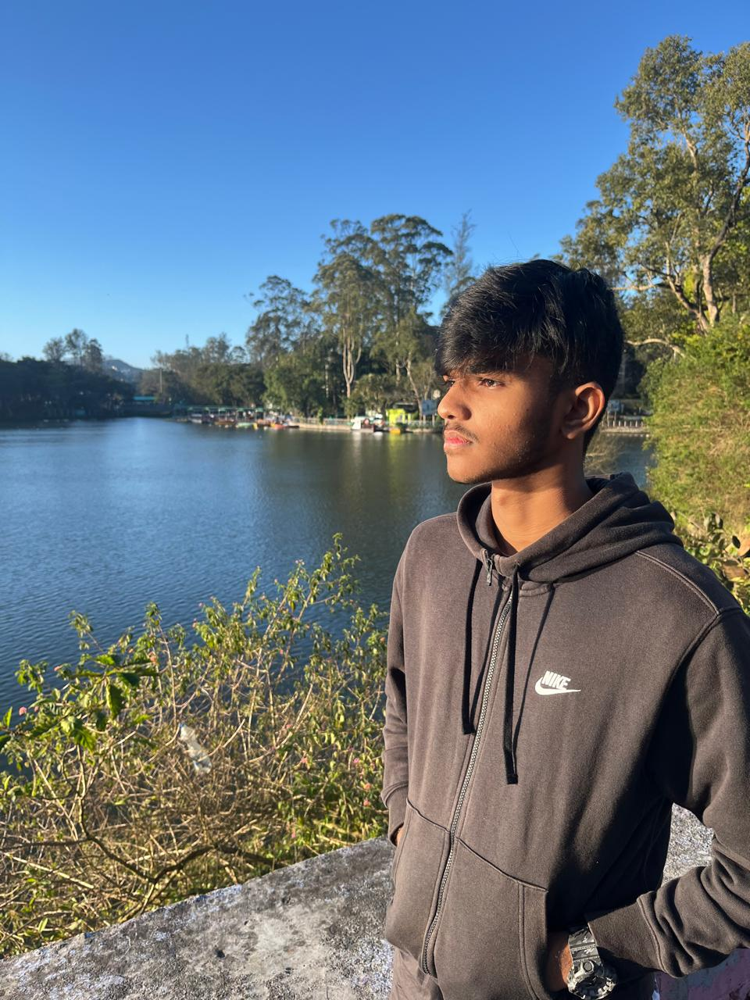

Sanjay J
VIT Vellore Computer Science student with a demonstrated ability to apply technical skills to complex problems.
Possesses a well-rounded skillset with experience in both technical development and artistic expression (sketching).
This adaptability allows for approaching challenges from diverse perspectives, fostering innovative solutions.
Seeks an opportunity within the software development industry to contribute expertise and learn from experienced professionals.
I am eager to apply my academic knowledge in a real-world setting.
About Me
Education Qualifications
- Bachelor of Technology in Computer Science and Engineering - VIT Vellore (2024 - Present)
- Higher Secondary Education - SPIPS (2022 - 2024)
- Secondary Education - EVPS (2011 - 2024)
Skills
- Python Programming
- Java Development
- C Programming
- C++ Programming
- Object-Oriented Programming (OOP)
- Data Structures and Algorithms
- Web Development (HTML/CSS)
- JavaScript
- Database Management (MySQL)
- Version Control (Git/GitHub)
- Digital Art & Sketching
Future Goals
- Secure a challenging internship in software development to gain practical experience.
- Contribute to open-source projects to enhance coding skills and collaborate with the developer community.
- Develop a personal project that combines technical skills and artistic creativity.
- Continuously learn new technologies and programming languages to stay updated in the field.
- Pursue higher education opportunities, such as a master's degree, to deepen knowledge in computer science.
Contact Me

Email: sanjayjayakumar2006@gmail.com
GitHub: sanjayy-j
LinkedIn: SANJAY J